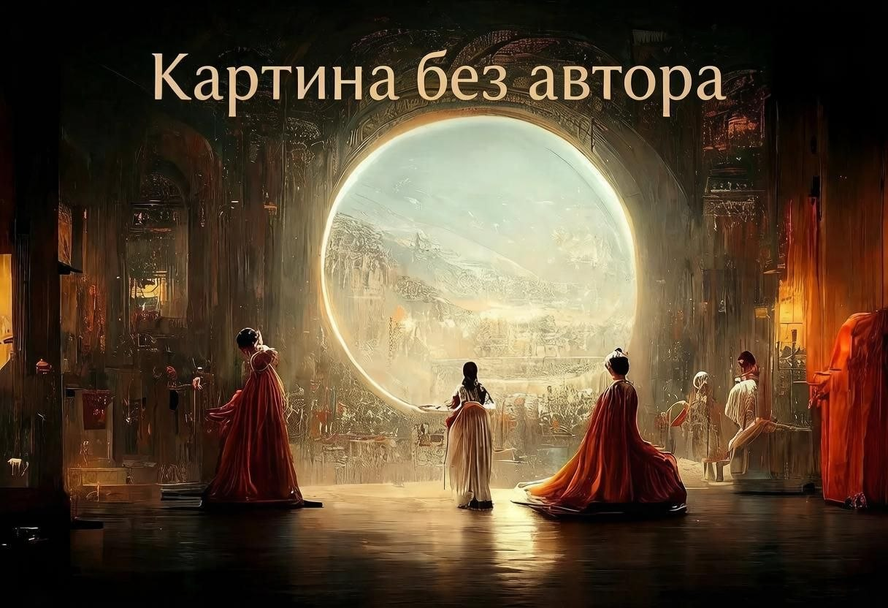

Картина без автора: как ИИ лишили прав на выигранную картину

В августе 2022 года на престижном художественном конкурсе Colorado State Fair в номинации «цифровое искусство» победила работа под названием «Théâtre D'opéra Spatial» («Космический оперный театр»). Автором значился Джейсон Аллен (Jason M. Allen), предприниматель и настольный дизайнер игр из Колорадо.
Больше полезного про нейросети — простым языком, каждый день в нашей группе ВКонтакте
Перейти во ВКонтакте →После церемонии награждения Аллен сам честно рассказал, что картина на сто процентов сгенерирована нейросетью Midjourney — он написал текстовый промт, получил несколько вариантов, доработал финальную версию в Photoshop и распечатал на холсте. По его словам, на весь процесс — включая перебор более 600 вариантов промта — ушло около 80 часов работы.
Признание вызвало бурную реакцию в художественном сообществе: многие обвинили Аллена в том, что он «обманул» конкурс, участвуя вне зала для традиционного искусства с работой, созданной машиной. Организаторы конкурса, впрочем, оставили результат в силе — Аллен подавал заявку именно в категорию цифрового искусства с использованием манипулированных фотографий, где допускалось использование цифровых инструментов.
Дальше события приняли юридический оборот. Копии картины начали массово появляться на маркетплейсах и продаваться другими людьми без ведома Аллена — и он решил зарегистрировать авторские права на работу, чтобы иметь возможность защитить её. В сентябре 2023 года Бюро авторских прав США (U.S. Copyright Office, USCO) вынесло решение по этому вопросу: регистрация была отклонена. Обоснование было простым и принципиальным — американское законодательство об авторском праве защищает только произведения, созданные человеком; работа, в значительной части сгенерированная искусственным интеллектом без достаточного творческого контроля человека над конечным результатом, под эту защиту не подпадает.
Аллен пытался оспорить это решение, указывая на то, что потратил десятки часов и сотни попыток формулирования промта, а также существенно дорабатывал изображение вручную в графическом редакторе — то есть, по его аргументации, творческий вклад человека был значительным. Суд, тем не менее, остался непреклонен в вопросе изначального отказа в регистрации.
Практический итог истории таков: сегодня картина-победитель может легально копироваться, печататься и продаваться любым желающим, а сам автор не обладает на неё эксклюзивными правами — прецедент, который до сих пор используется как ключевой пример при обсуждении границ авторского права в эпоху генеративного ИИ.
Источники: Reuters, The New York Times, РБК, материалы Бюро авторских прав США (U.S. Copyright Office).
Ещё по теме
Как обычные люди зарабатывают на ИИ: два примера без штата и без кодинга
Как ИИ приносит миллиарды: реальные кейсы X5 Group, Сбера, МТС и Serverspace
ИИ в глуши: краш-тест бесплатных нейросетей на слабом 3G без VPN